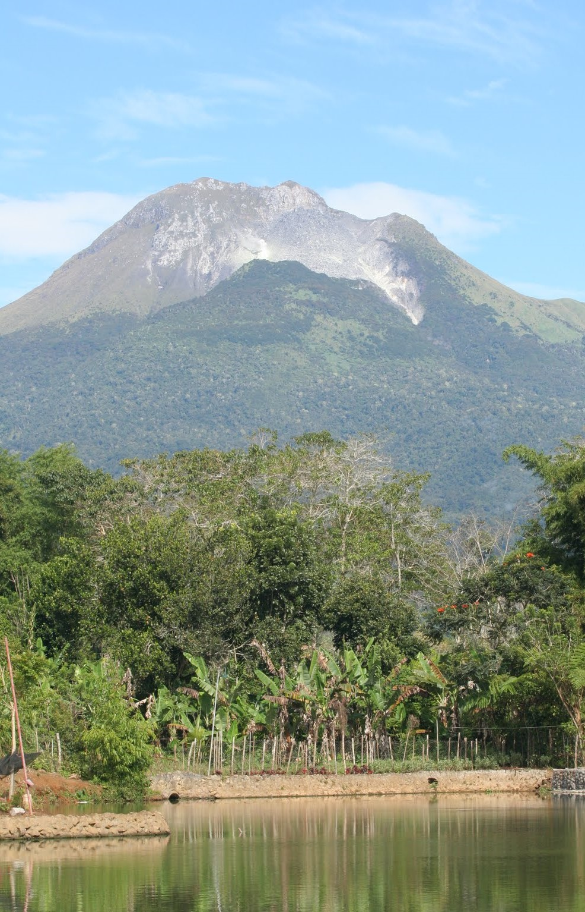

Davao Region, also known as Region 11, is a region located in the southeastern part of Mindanao island in the Philippines. It is composed of five provinces: Davao del Norte, Davao Oriental, Davao de Oro (formerly Compostela Valley), Davao del Sur, and Davao Occidental. Davao Region is known for its diverse landscapes, vibrant cities, cultural heritage, and abundant natural resources.
Davao del Norte is a province known for its agricultural abundance, including vast banana and coconut plantations. The province offers attractions such as the stunning Samal Island, a popular beach and diving destination, and the Monfort Bat Sanctuary, home to one of the largest colonies of fruit bats in the world.
Davao Oriental is a province known for its scenic coastlines, verdant mountains, and diverse ecosystems. It offers attractions like the pristine white sandy beaches of Dahican, the stunning Aliwagwag Falls, and the captivating Sleeping Dinosaur Island. The province is also home to the historical Cape San Agustin, a Spanish-era lighthouse.
Davao de Oro (formerly Compostela Valley) is a province known for its rich mineral resources and natural attractions. It offers picturesque landscapes, waterfalls, and hot springs. The province is also home to the stunning Mount Hamiguitan Range Wildlife Sanctuary, a UNESCO World Heritage Site known for its unique pygmy forest and diverse flora and fauna.
Davao del Sur is a province known for its beautiful beaches, mountains, and cultural heritage. It offers attractions like the iconic Mount Apo, the highest peak in the Philippines, and the enchanting Tinuy-an Falls. The province is also home to the Kadayawan Festival, a grand celebration of the region's bountiful harvest and cultural diversity.
Davao Occidental is the newest province in the Davao Region, created in 2013. It is known for its pristine beaches, remote islands, and marine biodiversity. The province offers opportunities for island hopping, snorkeling, and diving. Davao Occidental is also home to Mount Candalaga, a picturesque mountain range.
Davao Region is renowned for its progressive cities, including Davao City, the regional center and the largest city in the Philippines in terms of land area. Davao City is known for its strict adherence to safety and cleanliness, and offers attractions such as the Philippine Eagle Center, Eden Nature Park, and the vibrant night market at Roxas Avenue.
Davao Region showcases a harmonious blend of natural wonders, cultural heritage, and urban development. From exploring majestic mountains and waterfalls to experiencing vibrant festivals and enjoying the warmth of the local communities, Davao Region offers a diverse range of attractions for visitors to discover and appreciate.